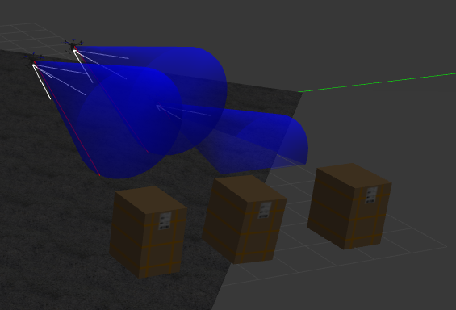
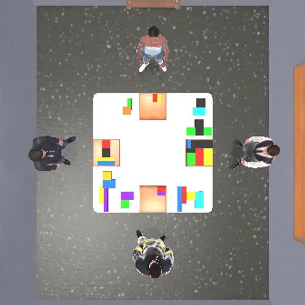
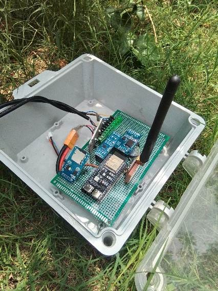
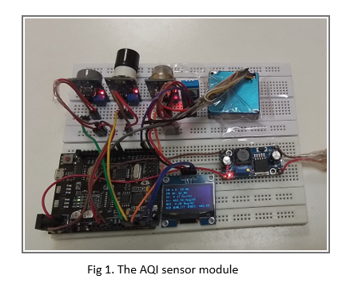
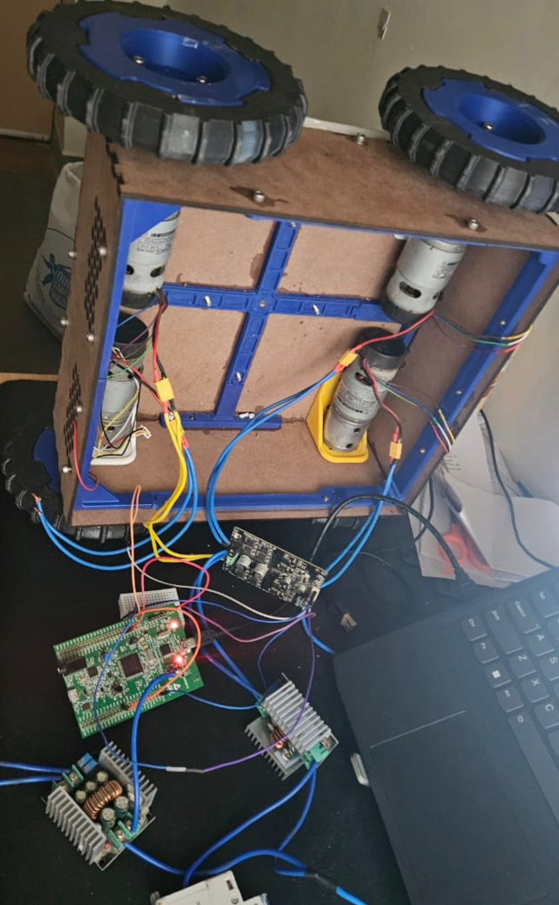

Developed a distributed drone system using PX4, ROS2 and Gazebo capable of tracking multiple objects simultaneously. The system incorporates OpenCV-based tracking, anti-collision algorithms, and is currently being extended with drone-to-drone communication simulation using XBee and trust-based coordination mechanisms.

Research project exploring embodied AI models that enable robots to navigate environments using natural language instructions. Currently studying and implementing VLN frameworks and cooperative embodied agent models.

Developed a low-cost IoT module for soil moisture and nutrient sensing during internship at ISRO. The system integrates LoRaWAN communication, sensor calibration, and server integration for precision agriculture applications.

Built a portable air quality monitoring system using calibrated sensors and CPCB AQI model. Conducted field tests across multiple locations to validate measurements and enable real-time monitoring through cellular connectivity.

Designed an STM32-based embedded system controlling a rover using Zigbee communication. Implemented sensor integration and motor control using UART, SPI and GPIO interfaces.